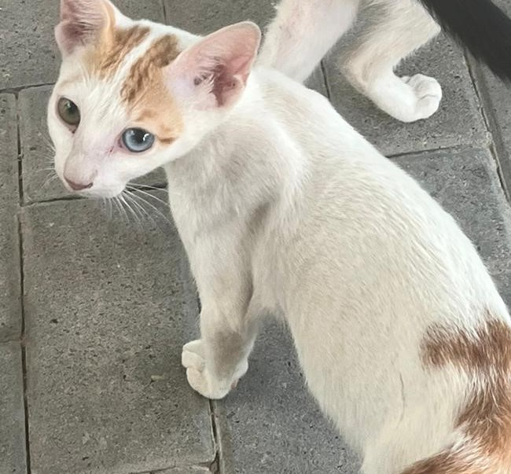

AUK Cats
| Name | Description |
|---|---|
|
King Pufak, First of His Name Age: 4 years Currently in AUK? No |
Oh boy! I gotta tell y'all about this legend! This majestic Orange Tabby KING arrived to AUK, and blessed everyone with his presence on July 2019. He was so loved for his surreally cuddly, outlandish, affectionate nature, that an Instagram account named @pufakbeinggood, was made to honor this lovely KING back in February 23, 2020. Our Majesty was adopted in July 2021 by a kind lady in the U.S.. Hence, his current whereabouts are in Pennsylvania, U.S. King Pufak, Your Majesty, if you see this, we really miss you! |
|
Elsa/Brioche Other names: Green, Cookie Age: 7.5/8 Currently in AUK? Yes |
Elsa/Brioche is a Calico cat born some time in 2016 to another Calico cat named Mama Stache and a Gray Tabby Cat. She has 2 siblings, an Orange Ragdoll Tabby cat named Foxy/Simba, and another Gray Tabby, that ran off a year later. She is an affectionate, sweet and cuddly cat who always loves food, belly rubs and sleeping besides her favorite people. |
|
Foxy/Simba Other names: Fiore Age: 7.5/8 Currently in AUK? Yes 
|
Foxy/Simba is an Orange Ragdoll Tabby born to a Calico cat named Mama Stache and a Gray Tabby cat. She has 2 siblings, another Calico cat named Elsa/Brioche, and another Gray Tabby, that ran off a year later. She is a fiesty, affectionate, and cuddly cat who always loves food, hanging out with her bestie, an Orange Tabby cat named Taco and sleeping besides her favorite people. |
|
Taco Other names: Taki, Tiger Age: 4 Currently in AUK? Yes |
Taco is an Orange Tabby cat that arrived to AUK some time in early 2019, when he was a small kitten. He is a shy and quiet little fella, but his trust can be gained through food and kneeling to his level, so he doesn't feel intimidated. Of course, this may take months or years, depending on the frequency of the feeding and affection, but don't give up. Once he warms up to you, he becomes cuddly and quite talkative too. |
|
Grandma Stache Age: Unknown. Looks around 8/9. Currently in AUK? Yes |
This Calico cat is the mother of Foxy/Simba, Elsa/Brioche and a Grey Tabby cat that ran away a year after he was born. Unlike her children, she is not an affectionate cat, as she will hiss and run away if a human approaches her. She is, however, a timid cat, and will meow for food, if she sees you have some on you. Just make sure you separate her from the other cats, as she is scared she will get injured due to her senile age. |
|
Angelina Age: Unknown Currently in AUK? Yes |
A Tortoiseshell cat who has been living in AUK for a long time. She is timid around both cats and humans. She will rub your legs once in a while, but will run away from you if you approach her, and might even scratch you if she has no other choice, which is a rare chance. |
|
Intro/Tim Other names: Fatso, Tyler, Andrew Age: 4/5 years Currently in AUK? No 
|
Intro/Tim is a Gray Tabby cat who arrived at AUK on November 4, 2020, during the Covid period, and was discovered by @xshinzo. He is an introverted cat who doesn't mind being pet and likes being given food (of course). During his time at AUK, he has sustained serious wounds, as a result of being involved in catfights. On March 5, 2024, he was taken to a vet to receive treatment for his wounds; however, two days later, while he was on the way to the vet to receive his last dose of injections, the crate he was in broke, and while the driver was trying to catch the cat, he scratched and bit the driver, causing him to escape from the car. Intro was last seen in Fintas, Block 4. His current whereabouts are unknown. |
|
Robert/Abu Tamba Sr. Other names: Cow Age: Unknown, looks like 5/6 years Currently in AUK? Yes |
Robert/Abu Tamba Sr. is a Tuxedo cat who was discovered in June/July 2021 by @xshinzo. He is the father of the four Kitskiteers: Robert Jr/Abu Tamba Jr., Carmello, Eva, Milkshake Jr.. He is a cat who loves to get into fights, and is aggressive to both humans and cats. He loves food so much, he is willing to bully other cats for it, but it is advised to be cautious around this cat as he scratches, if you get too close to him. |
|
Milkshake Sr. Age: Unknown. Looks like 3 years Currently in AUK? Yes 
|
A pregnant Milkshake Sr. was first found in the AUK Library sometime in August 2022. She has been through three pregnancies, therefore, giving birth to three sets of children, each set contains four children. However, the only known set of children is the second set (Robert Jr/Abu Tamba Jr., Carmello, Eva, Milkshake Jr.), as the kittens in the first set were either missing, adopted, or dead, while the kittens in the third set have yet to show themselves. Milkshake is a cuddly and affectionate, but needy cat, who does not like sharing her territory with other cats, even with her own children, and she will not hesitate to teach them a lesson, even while pregnant. |
|
Robert Jr./Abu Tamba Jr. Age: 1 Currently in AUK? Yes |
As mentioned before, this Tuxedo cat is one of the four Kitskiteers born to Abu Tamba Sr. and Milkshake Sr.. He is a very naughty and playful cat. He loves food so much, he, like his father and mother, is willing to tresspass other cats' territories and scratch them for their food. Unlike his father, he loves affection so much, that he will let humans pet him without the risk of getting scratched. Additionally, he clings to humans' legs for their love. |
|
Carmello Other names: Milky Age: 1 Currently in AUK? Yes  |
As mentioned before, this mostly white cat is one of the four Kitskiteers born to Abu Tamba Sr. and Milkshake Sr.. He is also a very naughty and playful cat. He loves food so much, he, like his father and mother, is willing to tresspass other cats' territories and scratch them for their food. Like most of his siblings, he likes being pet. |
|
Eva 2 Age: 1 Currently in AUK? Yes |
As mentioned before, this mostly white Ragdoll cat is one of the four Kitskiteers born to Abu Tamba Sr. and Milkshake Sr.. She is also a very naughty and playful cat. She loves food so much, he, like her father and mother, is willing to tresspass other cats' territories and scratch them for their food. Additionally, she loves being pet so much that she will lay next to the human who gives her a lot of love. |
|
MilkShake Jr. Other names: Coco Age: 1 Currently in AUK? Yes |
As mentioned before, this mostly white cat is one of the four Kitskiteers born to Abu Tamba Sr. and Milkshake Sr.. She is also a very naughty and playful cat. She loves food so much, he, like her father and mother, is willing to tresspass other cats' territories and scratch them for their food. However, unlike the rest of her siblings, she is shy at first, but once you gain her trust, she will warm up to you, and will let you pet her. Just give her food. |
|
MilkShake's 3rd batch Age: A few months Currently in AUK? Unknown |
These kittens were born in December 2023. However, not much is known about them |
|
The Tuxedo family Other names: Coco Age: Unknown (parents), 1 (children) Currently in AUK? Yes |
This is a family of cats. The children were born in summer 2023. However, not much is known about them |
|
Caramel/Eva Age: A few months old Currently in AUK? No 
|
This kitten that shares an uncanny resemblence to a current AUK cat named Eva, arrived in September 2022. She was a very cuddly kitten, who had another kitten as a bestfriend. Luckily, Caramel/Eva was adopted into a loving family some time between 2022 and 2023. |
|
Biscuit Age: A few months old Currently in AUK? No |
This little kitten was Caramel's/Eva's bestfreind. She was also very cuddly and affectionate, like her bestfriend. Unfortunately, due to an illness, she passed away sometime in 2022 or 2023. Fly high Biscuit |
|
MilkShake's 1st batch Age: a few months Currently in AUK? No |
These kittens were born at the end of 2022. One of the kittens went missing, another kitten sadly passed away, as a result of a catfight, and the third kitten was adopted |
|
Grandpa Grey Tabby Age: Unknown Currently in AUK? No |
This Grey Tabby is the father of Foxy/Simba, Elsa/Brioche, and aanother Grey Tabby cat. His current whereabouts are unknown. |
|
Grey Tabby Age: Unknown Currently in AUK? No |
This Grey Tabby is the brother of Foxy/Simba and Elsa/Brioche. According to an alumnus, he was very cuddly and affectionate. Like his father, his current whereabouts are unknown. |
|
Bendy/Bindi Age: Unknown Currently in AUK? No |
This Grey Tabby was a very affectionate cat, who loved food and being pet. Her current whereabouts are unknown. |
|
Squinty Age: Unknown Currently in AUK? No |
This Orange Tabby quacks like a duck according to an alumnus. Her current whereabouts are unknown. |